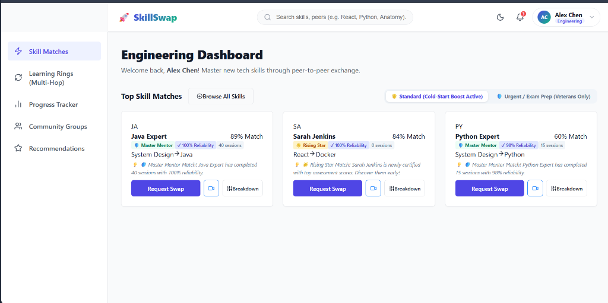
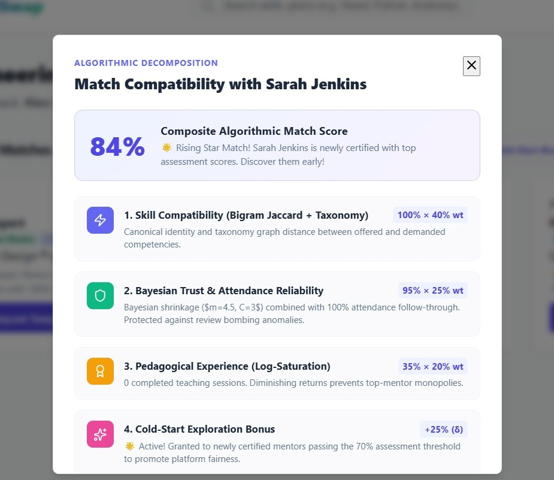
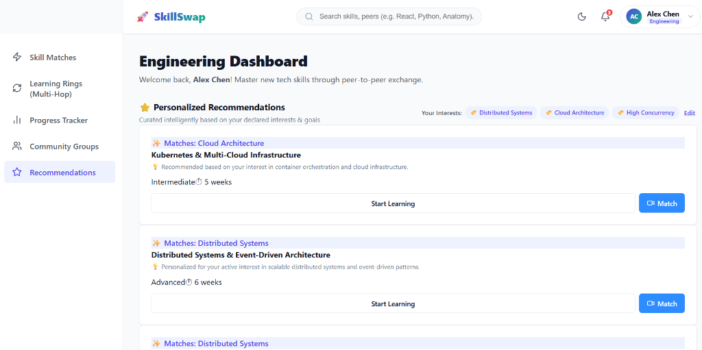

I. INTRODUCTION
Digital classrooms exploded recently, completely changing how we access education. While studying online lets you work from anywhere, older e-learning websites are mostly a one-way street. You sit there watching a lecture or reading a PDF, but you almost never get to interact with anyone else in real time. Learning in a group is totally different. It lets students debate ideas, tackle hard problems together, and actually build practical skills instead of just memorizing facts.
The problem is that finding someone to study with is surprisingly tough because everyone has different goals and skill levels. Sometimes you might be great at something another person is struggling with, and they might know exactly what you're trying to learn. But when you have thousands of people on a platform, finding that perfect match manually is impossible. People have tried using recommendation systems to fix online learning before. For instance, Kaiss et al. [1] made a hybrid recommender to suggest better resources. Amin et al. [2] built a personalized system for MOOCs that watches how you interact and then suggests courses. These show that models definitely work in education. The issue is they just suggest courses. They don't help you find actual human beings to learn with. Some people have looked into automating skill extraction too; Tamilarasi et al. [3] created a machine learning framework that figures out what skills people have to give them feedback.
We saw this gap and built an AI-Assisted Skill Swap Platform to fix it. Instead of just treating you as a student, our platform treats you as a teacher and a learner at the same time. If you know machine learning but want to pick up React.js, the system finds someone who knows React.js and wants to learn machine learning. This lets two people help each other out instead of relying on standard video courses.
Our platform takes AI matching and hooks it up with real-time chat, group study features, and progress tracking. We built the interface with React.js, handled the server with Node.js and Express, and used MongoDB to store everything. All the complex machine learning stuff runs on Python. The main goal here is to get these modules working together and test the system to see if AI matching actually helps people learn better together.
II. RELATED WORK
A lot of recent research looks at recommendation engines, pulling out skills from profiles, and career mapping. But almost all of it focuses on pointing users toward a textbook, a video, or a job opening, rather than setting up a direct skill trade between two people.
Kaiss et al. [1] built a hybrid e-learning recommender that figures out what a student likes and suggests resources based on that. It works great for standard classes, but it's built to recommend files, not peers. Amin et al. [2] created an engine for smart education environments that suggests study materials. Again, they don't tackle the problem of matching users who have complementary teaching needs.
Tamilarasi et al. [3] came up with an automated way to extract skills and recommend feedback. That kind of tech is useful for smart matching, but their work stops at figuring out the skills rather than setting up a peer-to-peer exchange. Selvaraj et al. [4] built an AI career tool that matches talent with open jobs. Predicting careers is definitely relevant, but their end goal is getting students hired, not helping them study together. Kadu et al. [5] did something similar, looking at how to predict student placements and suggest skills they need for the workforce, prioritizing getting a job over collaborative learning.
Thaoroijam et al. [6] looked into trust-based hybrid systems, pointing out that you need to mix a few different factors to get a recommendation you can actually trust. We definitely use hybrid concepts in our system, but their specific research wasn't trying to solve group skill sharing. Looking at all these studies [1]–[6], it's clear that AI recommendations work well for personalizing learning and analyzing what people know. The missing piece is that they almost entirely ignore the idea of reciprocal peer learning, where a user can act as a student and a teacher at the exact same time.
Our platform pushes the standard recommendation model further by focusing specifically on matching complementary skills. The system looks at what you know right now and what you want to know next, then hunts down the right partner. We built chat, progress tracking, and personalized suggestions straight into the platform so users can manage the entire learning exchange in one place.
| Features | Traditional E-Learning Platforms |
Online Course Platforms |
Skill Recommendation Systems |
Proposed AI-Assisted Skill Swap Platform |
|---|---|---|---|---|
| Personalized Recommendations | Limited | Moderate | Available | Advanced AI-Based |
| Skill Matching | Not Available | Not Available | Available | Intelligent Matching |
| Peer-to-Peer Learning | No | Limited | No | Yes |
| Real-Time Chat | Limited | Limited | No | Yes |
| Collaborative Learning | Low | Moderate | Low | High |
| Progress Tracking | Basic | Available | Limited | Advanced |
| Rating & Review System | Limited | Limited | No | Yes |
| Community Learning Groups | No | Partial | No | Yes |
| AI-Based Course Recommendation | Limited | Moderate | Yes | Advanced |
| Skill Swap Functionality | No | No | No | Yes |
III. SYSTEM DESIGN AND IMPLEMENTATION
The AI-Assisted Skill Swap Platform basically creates a smart space where people can trade skills and work on group projects. The whole idea revolves around reciprocal skill exchanges. You act as both the student and the teacher. By checking what skills you have and what you actually want to learn, the platform hunts down the right partner for you instead of just handing you a course catalog. The system handles everything from managing your profile to skill matching, chatting with peers, tracking progress, and eventually generating a certificate.
We built the architecture using a frontend layer, a recommendation engine in the middle, and a data layer. The frontend is where you register, build a profile, look at peer suggestions, and send out skill-swap requests. The backend processes the user data and runs the matching algorithms. The database layer obviously stores all the information required for matching, running group projects, and keeping track of certifications.
We completely ignored the idea of recommending static resources. Instead, the system looks at your current abilities and your learning goals to find a human partner. You hand over two sets of data: the skills you already have (Sihave) and the skills you want to learn (Siwant). Two users, let's call them i and j, match up if at least one skill user i has is something user j wants, and vice versa:
If both of these checks pass, the two users are flagged as possible partners. The algorithm then sorts these matches by looking at their skill levels, interests, experience, ratings, and if they've collaborated well in the past.
A. System Workflow
Everything kicks off when a user registers and sets up their profile. The system immediately checks their preferences against the rest of the database. When it spots a reciprocal match—say User A knows Java and wants Python, and User B knows Python and wants Java—it alerts them both. A user can shoot over a skill-swap request. If the other person accepts, they can jump right into the built-in chat to figure out their meeting schedule. If you just want to casually learn, you can join community groups to share knowledge with people who have similar interests. The platform keeps an eye on your development as sessions happen. Once you finish a session, you rate your partner. We also set up the system to hand out certificates when you complete specific tasks or coursework.
B. Implementation of Major Modules
User Registration and Profile Management: You drop in your basic info and list your current and desired skills when you sign up. The auth system locks down the account so only registered members get in. You can always go back and tweak your profile when you learn something new.
Skill Matching and Recommendation: This is the core module. It weighs your current abilities against what you want to learn. The algorithm searches for users who can help each other out. It throws data like interests, past experience, and ratings into the mix to pick the absolute best partner.
Skill-Swap and Communication Module: After you find a good partner, you send a request. When they approve it, a real-time chat window opens up so you can talk directly and schedule a session. You don't need to jump onto a third-party app to coordinate.
Progress Tracking and Feedback: Users can log their development and review what they've finished. After a session wraps up, you get to rate the experience and write a quick review. This feedback basically tells everyone else if the session was useful and gives a hint about the person's teaching style.
Community Learning and Certificate Generation: We wanted to push community learning, so the platform helps people with shared interests jump into group chats. The system also generates digital certificates when you finish specific activities, giving you a concrete record of what you accomplished.
| Approach | Main Objective | Skill-Based Recommendation |
Reciprocal Skill Matching |
Peer-to-Peer Interaction |
Collaborative Learning |
|---|---|---|---|---|---|
| Kaiss et al. [1] | Personalized e-learning recommendation |
Limited | X | Limited | Limited |
| Amin et al. [2] | Personalized MOOC/ e-learning recommendation |
Limited | X | Limited | Limited |
| Tamilarasi et al. [3] | Skill extraction and feedback recommendation |
✓ | X | X | X |
| Selvaraj et al. [4] | Career mapping and job-role prediction |
✓ | X | X | X |
| Kadu et al. [5] | Placement prediction and skill recommendation |
✓ | X | X | X |
| Thaoroijam et al. [6] | Trust-based hybrid recommendation |
Partial | X | Limited | Limited |
| Proposed Platform | Peer-to-peer skill exchange |
✓ | ✓ | ✓ | ✓ |
IV. COMPARATIVE ANALYSIS
Plenty of research dives into personalized e-learning and career prediction. But practically all of them just try to find you a good course or a job instead of connecting you with another human to trade skills. Kaiss et al. [1] and Amin et al. [2] both zero in on recommending courses. Tamilarasi et al. [3] work on automatically identifying skills. Selvaraj et al. [4] and Kadu et al. [5] strictly look at career mapping and predicting job placements. Thaoroijam et al. [6] mess around with trust-based recommendation formulas.
Our approach completely flips how we look at user relationships. Instead of pointing you to a job board or a video, our system looks at what you know and what you're trying to figure out. It checks if you have what the other person needs, while simultaneously checking if they have what you need. This makes way more sense for peer-to-peer skill sharing than traditional educational recommendations.
Most platforms out there obsess over customizing standard learning tracks and improving recommendation accuracy, but they totally ignore the idea of students actively trading talents. Our tool fixes this by letting you play both roles at once—you learn something new while teaching something you already mastered. Since we threw chat, progress tracking, and certification into the mix, you control your entire learning journey in one spot. The biggest takeaway here is that we combined reciprocal skill matching with an actual end-to-end peer learning environment.
V. PERFORMANCE EVALUATION
We tested out the platform to see if it actually works the way we designed it, specifically looking at how well the recommendation engine picks peer-learning partners and generates its compatibility scores.
A. Experimental Setup
We fed the prototype a bunch of sample user profiles. These profiles were packed with different skills, learning goals, proficiency levels, ratings, and past teaching sessions. The main thing the system looked for was reciprocal matching. The interface takes these matches and spits out a composite match score, sorting candidates based on their verified skills, how reliable they are with attendance, and their overall ratings.
B. Composite Match-Score Evaluation
The recommendation engine doesn't just look at one thing. It actually generates a composite match score by throwing four major factors into the blender: skill compatibility, a Bayesian trust score mixed with attendance reliability, pedagogical experience, and a cold-start exploration bonus.
For skill compatibility, it checks the relationship between what someone offers and what the other person wants. It uses skill normalization, taxonomy information, and Bigram Jaccard-based similarity to figure this out. The trust score takes a Bayesian-adjusted rating and mixes it directly with how often the person actually shows up for sessions. Finally, pedagogical experience just looks at how many sessions you've taught, how good you are, and how long you've been doing it.
In our implementation, skill compatibility gets 40% of the weight, trust and attendance gets 25%, and pedagogical experience gets 20%. That leaves a bit of room for the cold-start mechanism, which essentially gives new, verified mentors a small boost so they don't get buried at the bottom of the list. The interface breaks all of this down mathematically so you actually understand where the recommendation score comes from. In our tests, the interface was throwing out composite match scores like 60% and 84% for different candidate profiles. Just to be clear, these are system-generated compatibility scores, not classification accuracy metrics.


C. Trust and Reliability Evaluation
The trust component relies on a Bayesian adjustment so a single bad rating doesn't completely tank a user's score if they don't have many reviews yet. If R is the raw average rating and N is the total number of ratings, our Bayesian adjustment uses a prior mean of 4.5 and a prior weight of 3:
We normalize this Bayesian value against a maximum rating of 5. Then, we combine that normalized rating with the user's actual attendance reliability using this weighting formula:
where Bn is the normalized Bayesian rating and A is their attendance reliability. Basically, this means the system cares just as much about whether you actually show up as it does about what people rate you.
D. Pedagogical Experience and Cold-Start Evaluation
We definitely want the platform to factor in teaching experience when it ranks partners. But we use logarithmic saturation for completed teaching sessions, which means the boost you get from teaching starts to taper off eventually. This stops super-users from monopolizing all the matches.
The cold-start mechanism is there specifically to fix the issue where new users have no interaction history. If you are a verified mentor but have completed fewer than five teaching sessions, the system hands you an exploration bonus. That bonus shrinks every time you finish a session and disappears entirely once you hit the threshold. It gives new users a fighting chance to get recommended without throwing out our verification standards.
E. Functional Evaluation
During our functional evaluation, we poked around everything—user authentication, profile management, the recommendation engine, chat, and the certificate generator. The dashboard successfully presented potential learning partners alongside their compatibility scores and exactly why they matched. We verified that users could smoothly shoot over skill-swap requests and start chatting. The verification system successfully split up verified skills from unverified self-declared ones.

F. Discussion of Evaluation
The evaluation proves that the platform actually uses a multi-factor approach instead of just looking for direct keyword overlaps. Skill compatibility is the heavy lifter, but throwing in trust, attendance, teaching experience, and the cold-start bonus makes the rankings way better.
Giving users the algorithmic breakdown was a smart move because it makes the recommendation process completely transparent. Phase 1 of our evaluation was mostly about proving the concept and testing the mechanics. To get solid statistical proof and see how it handles scale, we'd obviously need to run it with way more users and much larger datasets.
VI. CONCLUSION AND FUTURE WORK
We successfully built an AI-Assisted Skill Swap Platform that actually works for collaborative learning. The whole point was to help people find partners to trade skills with. Instead of shoving course recommendations at you, the system digs into what you know and what you want to learn to find a reciprocal match.
We packed the platform with everything you need: profile management, skill matching, chat, progress tracking, and certificates. The matching engine doesn't just stop at skill overlap; it pulls in trust scores, attendance records, teaching experience, and even helps out new users.
The first phase proves that all these isolated features work together seamlessly as one platform. You can create a profile, get matched, start chatting, and track your learning. We tested the core mechanics, but moving forward, we really need to run it against a massive dataset to see how it performs under pressure.
For the next phase, we want to roll out a robust skill verification system. If you want to teach a skill for the first time, you'll have to pass an assessment with at least an 80%. For coding skills, this means actual programming questions. To stop cheating, we plan to wire up camera monitoring and tab-switch detection. If you click off the test page, the system will just end your session.
We're also going to build out an admin dashboard so someone can manage users, approve new skills, and handle content moderation. We want to push the platform into completely different fields too, like medical learning, which would need two-way and three-way interactions. We're thinking about adding timestamped lecture videos with built-in quizzes. All of these upgrades will make the platform much more reliable, focusing heavily on proving users actually have the skills they claim to have.
REFERENCES
[1] W. Kaiss, K. Mansouri, and F. Poirier, "Personalized learning recommender system based on a hybrid approach," in Proc. IEEE Global Engineering Education Conference (EDUCON), 2022, pp. 1621–1627.
[2] S. Amin, M. I. Uddin, W. K. Mashwani, A. A. Alarood, A. Alzahrani, and A. O. Alzahrani, "Developing a Personalized E-Learning and MOOC Recommender System in IoT-Enabled Smart Education," IEEE Access, vol. 11, pp. 136437–136455, 2023.
[3] M. Tamilarasi, R. Harish Ragavendar, M. Sasi Kumar and S. Nandhakumar, "Automation Of Skill Extraction And Feedback Recommender System Using Machine Learning," 2025 6th International Conference on Recent Advances in Information Technology (RAIT), Dhanbad, India, 2025, pp. 1-5.
[4] K. Selvaraj, M. Adnan, K. Vishnupriya, and M. Reddy, "AI-Driven Intelligent Career Mapping and Skill-based Job Role Predicting Career Guidance System," in Proc. Third International Conference on Augmented Intelligence and Sustainable Systems (ICAISS), 2025.
[5] R. Kadu, P. J. Assudani, T. Mukewar, J. Kapgate, and R. Bijekar, "Student Placement Prediction and Skill Recommendation System using Machine Learning Algorithms," in Proc. International Conference on Inventive Computation Technologies (ICICT), 2024.
[6] K. Thaoroijam, S. Naveen Kumar, S. Sadeesh Kumar, H. Durani, C. H. Nirosha, and P. Agrawal, "Integrating Trust-Based Hybrid Recommendation Systems with Soft Computing Techniques for Effective Recommendations," in Proc. IEEE Madhya Pradesh Section Conference (MPCON), 2025.
[7] R. Madduri, Z. Li, T. Nandi, K. Kim, M. Ryu, and A. Rodriguez, "Advances in Privacy Preserving Federated Learning to Realize a Truly Learning Healthcare System," in Proc. IEEE 6th International Conference on Trust, Privacy and Security in Intelligent Systems and Applications (TPS-ISA), 2024.
[8] G. Uma Maheswari, J. Gnana Jeslin, M. Rajasuguna, and A. S., "Transforming Healthcare with Federated Learning-based Artificial Intelligence: Concepts, Classifications, and Challenges," in Proc. 3rd International Conference on Sentiment Analysis and Deep Learning (ICSADL), 2024.
[9] S. Aggarwal and D. Tripathi, "AI-Generated Content on Social Networking Sites: Reviewing Trust and Authenticity of the Users," in Proc. IEEE DELCON International Conference on Recent Smart Technologies in Engineering for Sustainable Development, 2025.
[10] A. Agarwal, "Visual Provenance: Adaptive Networks for Synthetic Content Detection," in Proc. World Skills Conference on Universal Data Analytics and Sciences (WorldSUAS), 2025.